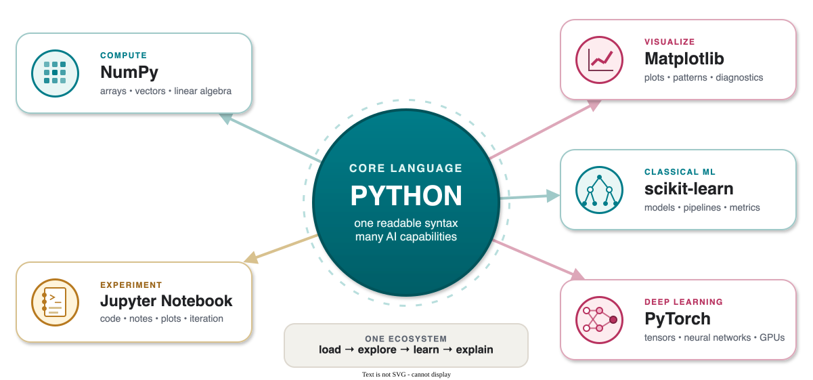

CS 463G & CS 663
(Intro to) AI
Lecture 0: Programming Language and Tools
Fall 2026
Each tool extends the same readable language with a different AI capability.

Python is the default language for most AI teaching, research, and prototyping.
Recommended practical options:
| Option | Good for | Link |
|---|---|---|
| Python installer | Minimal setup | python.org |
| Anaconda or Miniconda | Scientific Python environment | anaconda.com |
uv |
Fast modern package/project manager | docs.astral.sh/uv |
Pick one setup and keep it stable. Most beginner pain comes from mixing several Python installations.
Seek help from YouTube, AI tools, or classmates if you get stuck on installation. The course is about AI, not Python setup.
name = "Ada"
scores = [90, 85, 100]
for score in scores:
if score >= 90:
print(name, "did great")
else:
print(name, "can improve")What matters:
def accuracy(predictions, labels):
correct = 0
for y_hat, y in zip(predictions, labels):
if y_hat == y:
correct += 1
return correct / len(labels)
example = {"model": "knn", "accuracy": 0.93}If you can read loops, functions, lists, dictionaries, and NumPy arrays, you can follow most course code.
Jupyter Notebook and JupyterLab mix code cells, Markdown explanation, tables, plots, and step-by-step experiments.
Run locally with:
Notebook habit: restart the kernel and run all cells before submitting or trusting results.
Google Colab runs notebooks in the browser.
Arrays, vectors, matrices, linear algebra.
Plots and visual diagnostics.
Neural networks and deep learning.
PySide6 is Python binding for Qt.
Use it when you want a small desktop app instead of only scripts or notebooks.
from PySide6.QtWidgets import QApplication, QLabel
app = QApplication([])
label = QLabel("Hello AI tools")
label.show()
app.exec()GUI work is optional, but useful if you want a more polished project demo.
Ollama runs many language models locally.
Alternative: LM Studio provides a graphical interface for downloading and running local models.
Local models are not required for the course, but they can make a project feel like a real AI application.
AI chatbot/agents are optional, but useful when used carefully.
| Tool type | Examples | Good use |
|---|---|---|
| AI chatbot | ChatGPT | Explaining concepts, checking intuition, drafting examples |
| Coding agent | Codex | Editing code, testing, refactoring, building course materials |
| Alternatives | Claude, Gemini, Copilot, Cursor, Perplexity | Compare explanations and workflows |
Use AI chatbot/agents as collaborators, not as a replacement for understanding.
Instead of:
“Solve this homework.”
Ask:
“Explain why my BFS queue update is wrong without giving me the full solution.”
Hugging Face is a major hub for:
transformers library.When you want to see what people are using now, Hugging Face is often one of the first places to look.
Minimum:
Recommended later: